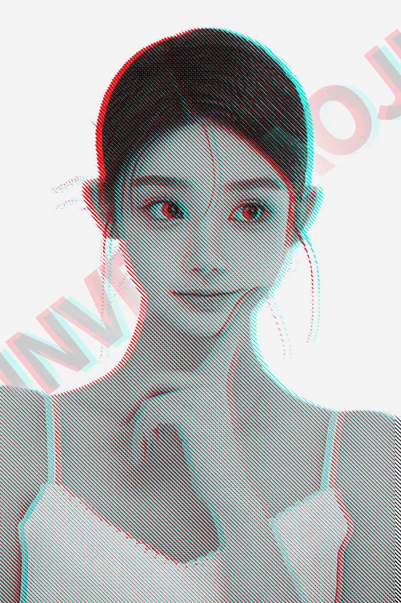

视频教程： https://youtu.be/fm0UUvdlzzM
视频中使用的素材：点击下载>> | 备用下载>>
以下是PS颗粒版画成品效果

步骤：
首先我们Ctrl+N新建个图层创建
然后把素材拖进来
这个素材我放在视频下方 大家可以领取
确定
这里我们给他栅格化图层
点击图像调整
选择一个黑白 确定
然后我们点击图像
这里我们选择灰度 然后扔掉颜色信息
点击图像模式位图 确定
这里我们选择20
我们点击图像 模式
选这个灰度确定
然后选择调整的模式 再选择RGB 确定
然后我们Ctrl+J
点击右键 选择混合模式
这里们关闭R通道 点击确定
然后我们向左移动一下
他就会出现 红色和蓝色碰撞的颜色
然后我给他打下文字
这里文字大家可以自行随便打
确定
然后我们Ctrl+T给他
给他旋转一下
给他放大
确定
然后我们Ctrl+J复制两个
点击空白的地方
调出混合选项
这里们关闭R通道
这里我们只保留R通道
确定
然后我们移动一下
这里我们把颜色
调成一个黑色
确定
然后这里我们添加一个蒙版
选择画笔工具
我们把多余的部分擦掉
这里
这里我们也添加一个
这里也是一样
然后选择
x切换白色
再把它擦回来
我们Ctrl+Shift+E
给他盖印一个图层
然后选择
色相饱和度
调整饱和度
调整一下
然后选择曲线
然后我们颗粒版画效果就完成了